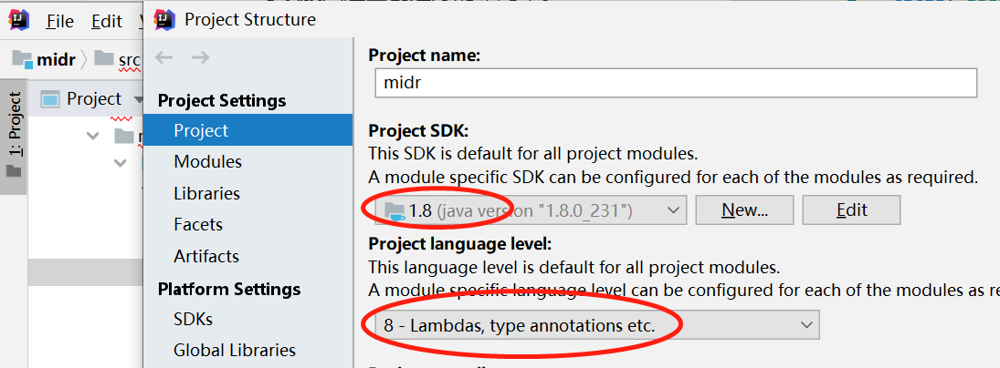

修改项目的jdk版本
- file -> Project Structure -> Project 一共修改三处

用来为盒模型提供最大的灵活性，任何一个容器都可以指定为flex布局
| 属性值 | 说明 |
|---|---|
| row | 默认从左到右 |
| row-reverse | 从右到左 |
| column | 从上到下 |
| column-reverse | 从下到上 |
使用此属性之前一定要先确定好主轴
| 属性 | 说明 |
|---|---|
| flex-start | 默认值 从头部开始 如果主轴是x轴，则从左到右 |
| flex-end | 从尾部开始排列 |
| center | 在主轴居中对齐(如果主轴是x轴 则水平居中) |
| space-around | 平分剩余空间 |
| space-between | 先两边贴边 再平分剩余空间 |
flex布局中项目默认是不换行的，都排在一条线上。如果装不开，会缩小子元素的宽度。
| 属性 | 说明 |
|---|---|
| nowrap | 默认值 不换行 |
| wrap | 换行 |
该元素是控制子项在侧轴(默认是y轴)上的排列方式，在子项为单项的时候使用
| 属性值 | 说明 |
|---|---|
| flex-start | 默认值 从上到下 |
| flex-end | 从下到上 |
| center | 挤在一起居中(垂直居中) |
| stretch | 拉伸 |
设置子项在侧轴上的排列方式并且只能用于子项出现的换行的情况(多行),在单行下是没有效果的
| 属性值 | 说明 |
|---|---|
| flex-start | 默认值 从侧轴的头部开始排列 |
| flex-end | 从侧轴的尾部开始排列 |
| center | 在侧轴中间显示 |
| space-around | 子项在侧轴平分剩余空间 |
| space-between | 子项在侧轴先分布在两头 再平分剩余空间 |
| stretch | 设置子项元素高度平分父元素高度 |
是 flex-direction 和 flex-wrap 属性的复合属性
1 | <!-- 设置主轴方向为x轴，并且换行 --> |
flex属性定义子项目分配剩余空间，用flex来表示占多少份数
align-self属性允许单个项目有与其它项目不一样的对齐方式，可覆盖align-items属性。默认值为auto，表示继承父元素的align-items属性，如果没有父元素，则等同于stretch
数值越小，排列越靠前，默认为0
1 | <!-- html部分 --> |
要点:修改x轴属性中的type为value,y轴属性中的type为category
1 |
|
1 | <!-- html部分 要给 div 宽度和高度 --> |
实现效果

1 | <!-- html部分 --> |

- on()方法可以给元素绑定一个或多个事件的事件处理函数
1 | //第一种写法 |
- on()可以实现事件委派操作。事件委派的定义就是，把原来加给子元素身上的事件绑定在父元素身上，就是把事件委派给父元素。
1 | //给ul绑定事件，触发对象是li 只有当点击到li时 会产生冒泡 会触发到父级身上 然后才会实现点击事件 |
- on()可以给未来动态创建的元素绑定事件
1 | //3、可以给未来动态创建的元素绑定事件 |
作用域的定义是：一个变量可以生效的范围
在JavaScript当中，只有函数有局部作用域，if、for等都没有。在局部作用域中定义的变量只能在这个局部作用域内部使用
1 | <script> |
有一种特殊的情况(把局部变量变成伪全局变量)
缺点是：
- 生命周期变长
- 占据了全局命名空间，造成不可预知的错误
1 | <script> |
面试题总结
1 | var btns = document.querySelectorAll('button'); |
解决办法
1 | //解决办法 函数有局部作用域 |
定义：官方解释说是一套用于构建用户界面的渐进式框架
vue属于声明式编程 其优点是数据和界面分离
1 | <!-- {{}} 对变量做解析--> |

Model和View并无直接关联，而是通过ViewModel来进行联系的，Model和ViewModel之间有着双向数据绑定的联系，因此当Model中的数据改变时会触发View层的刷新，View中由于用户交互操作而改变的数据也会在Model中同步。这种模式实现了Model和View的数据自动同步，因此开发者只需要专注对数据的维护操作即可，而不需要自己操作DOM
v-for
v-bind
v-on
v-once
<h2 v-once>{{msg}}</h2>v-html
v-text
<h2 v-text="msg">World</h2> 最终只会显示msg里面的内容v-pre
v-cloak
1 | <!-- 如果元素没有 v-cloak 属性 页面最新展示{{msg}} 两秒以后 才会输出 hello 而如果有这个属性 可以先隐藏 2s以后在显示 此时元素就没有v-cloak指令了 --> |
v-bind